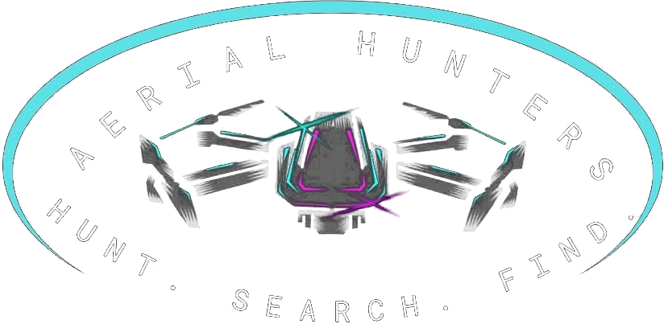

AboutAerial Hunter
Local ground. Eyes in the sky.
A drone search service from Parke County, Indiana, run by a certified Part 107 pilot who knows this ground.

(The story)
Aerial Hunter exists for a simple reason: the kind of thermal drone that search teams rely on should be within reach of the hunter who lost a deer at dusk, the family whose dog ran off in a storm, and the farmer counting cattle across back pasture. A certified pilot, the right drone, and neighbors who need a hand.

- Hunt.
It starts with hunters. Losing a deer you shot is the worst feeling in the woods, and doing right by the animal matters. Deer recovery is at the heart of what Aerial Hunter does.
- Search.
The same thermal camera that finds a deer in the timber finds a frightened dog in a fencerow, or a calf that wandered off from the herd. Different animals, same careful pattern.
- Find.
The point isn’t flying. It’s walking out to what you lost. Every search ends with someone on the ground being guided straight to it.
How we work
- 01
Straight answers
If conditions or cover make a find unlikely, you’ll hear it on the phone, before anyone drives out.
- 02
Landowners first
We fly and recover only where we have permission, and we help you sort it out with neighbors.
- 03
Quick to respond
Lost animals don’t wait. Call as soon as you know, and we’ll tell you how quickly we can get there.
- 04
Fair prices
Rates are listed on the Services page. We’ll confirm the cost before we drive out.
Follow along